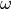

Internals¶
PyIBL is built on top of PyACTUp, a Python implementation of a portion of ACT-R’s declarative memory. This chapter describes the computations underlying decisions made by PyIBL, which are mostly carried out in the underlying PyACTUp code.
The fundamental unit of memory in PyIBL is an instance (a “chunk” in PyACTUp), which combines the attributes of a choice with the result it led to, along with timing data.
Activation¶
A fundamental part of retrieving an instance from an agent’s memory is computing the activation of that instance,
a real number describing
how likely it is to be recalled, based on how frequently and recently it has been experienced by the Agent, and how well it
matches the attributes of what is to be retrieved.
The activation, of instance i at time t is a sum of three components,
the base-level activation, the partial matching correction, and the activation noise.
Base-level activation¶
The base-level activation, , describes the frequency and recency of the instance i,
and depends upon the decay parameter of the Agent, d. In the normal case, when the
agent’s optimized_learning parameter is False, the base-level activation is computed using
the amount of time that has elapsed since each of the past experiences of i; in the following this
set of times of experiences of i before t is denoted by .
If the agent’s optimized_learning parameter is True an approximation is used instead, sometimes less taxing of
computational resources. It is particularly useful if the same instances are expected to be seen many times, and assumes
that repeated experiences of the various instances are distributed roughly evenly over time.
Instead of using the times of all the past occurrences of i, it uses  , the time of
the first appearance of i, and , a count of the number of times i has appeared before time t.
, the time of
the first appearance of i, and , a count of the number of times i has appeared before time t.
The optimized_learning parameter may also be set to a positive integer. This specifies a number of most recent
reinforcements of a chunk to be used to compute the base-level activation in the normal way, with the contributions
of any older than those approximated using a formula similar to the preceding.
Note that setting the decay parameter to None disables the computation of base-level
activation. That is, the base-level component of the total activation is zero in this case.
Partial Matching¶
If the agent’s mismatch_penalty parameter is None, the partial matching correction,  , is zero.
Otherwise depends upon the similarities of the attributes of the instance to those attributes
being sought in the retrieval and the value of the mismatch_penalty parameter.
, is zero.
Otherwise depends upon the similarities of the attributes of the instance to those attributes
being sought in the retrieval and the value of the mismatch_penalty parameter.
PyIBL represents similarities as real numbers between zero and one, inclusive, where two values being completely similar, ==,,
has a value of one; and being completely dissimilar has a value of zero; with various other degrees of similarity being
positive, real numbers less than one.
How to compute the similarity of two instances is determined by the programmer, using the
method similarity().
A function is supplied to this method to be applied to values of the
attributes of given names, this function returning a similarity value. In addition, the similarity method
can assign a weight, , to these attributes, allowing the mismatch contributions of multiple attributes
to be scaled with respect to one another. If not explicitly supplied this weight defaults to one.
If the mismatch parameter has positive real value  , the similarity of attribute j of
instance i to the desired
value of that attribute is , the similarity weight of attribute j is ,
and the set of all attributes for which a similarity function is defined is ,
the partial matching correction is
, the similarity of attribute j of
instance i to the desired
value of that attribute is , the similarity weight of attribute j is ,
and the set of all attributes for which a similarity function is defined is ,
the partial matching correction is
The value of should be positive, and thus is negative, so it is not so much that increased
similarities increase the activation as dissimilarities reduce it, and increased similarities simply cause it
to be reduced less, scaled by the value of .
Attributes for which no similarity function is defined are always matched exactly, non-matching instances not being considered at all.
Activation noise¶
The activation noise,  , implements the stochasticity of retrievals from an agent’s memory.
It is sampled from a distribution, scaled by the
, implements the stochasticity of retrievals from an agent’s memory.
It is sampled from a distribution, scaled by the noise parameter. This sampling occurs every time the
activation of an instance needs to be calculated, and is typically different each time.
By default this distribution is a logistic distribution centered on zero. The distribution used can be
changed for special purposes by using an Agent’s noise_distribution attribute, though for
nearly all uses the default is the right choice.
An Agent has a scale parameter, noise. If this parameter is denoted as  , and
if the value sampled from the distribution is
, and
if the value sampled from the distribution is  , the activation noise is
, the activation noise is
Note that setting the noise parameter to zero results in supplying
no noise to the activation. This does not quite make operation of
PyIBL deterministic, since retrievals of instances with the same
activations are resolved randomly.
Blending¶
Once the activations of all the relevant instances have been computed, they are used to compute a blended value of the utility, an average of the utilities of those instances weighted by a function of the instances’ activations, the probability of retrieval.
A parameter, the temperature, or  , is used in constructing this blended value.
In PyIBL the value of this parameter is by default the
, is used in constructing this blended value.
In PyIBL the value of this parameter is by default the noise parameter used for activation noise,
multiplied by . However it can be set independently of the noise, if preferred, and is
often set to 1.
For a given option being considered, k, let be the set of all matching instances. Then the probability of retrieval of instance at time t is
From these we can compute the blended value at time t, of this option’s various utilities in the
instances for this option. If  is the utility that was provided as the first argument in the call to
is the utility that was provided as the first argument in the call to
respond() that completed the experience of instance i, or equivalently was supplied by a call to
populate() or with the default_utility, this blended value is